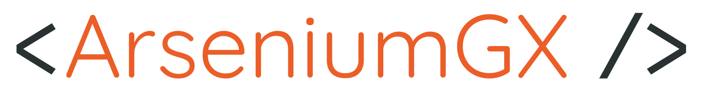

<footer class="footer">
  <div class="footer__redes">
    <span class="footer__redes__text">Minhas redes</span>
    <ul class="footer__redes__container">
      <li class="footer__redes__container__item">
        <a href="https://www.linkedin.com/in/arseniumgx" target="_blank">
          <ng-icon class="linkedin" [name]="'bootstrapLinkedin'" />
        </a>
      </li>
      <li class="footer__redes__container__item">
        <a href="https://www.github.com/arseniumgx" target="_blank">
          <ng-icon class="github" [name]="'bootstrapGithub'" />
        </a>
      </li>
      <li class="footer__redes__container__item">
        <a href="http://www.facebook.com/arseniumgx" target="_blank">
          <ng-icon class="facebook" [name]="'bootstrapFacebook'" />
        </a>
      </li>
      <li class="footer__redes__container__item">
        <a href="https://www.twitter.com/arseniumgx" target="_blank">
          <ng-icon class="twitter" [name]="'bootstrapTwitter'" />
        </a>
      </li>
    </ul>
  </div>
  <div class="footer__logo">
    
  </div>
  <span class="footer__copy">&copy; Criado por José "ArseniumGX" Macedo</span>
</footer>
